Anbefaling 6 fastslår, at skolen skal tale med eleverne om, hvordan, hvornår og med hvilket formål de kan bruge generativ AI (Børne- og Undervisningsministeriet, 2025). Det er et ledelsesansvar at sikre, at denne samtale reelt finder sted på tværs af klasser og årgange, ikke kun hos de lærere, der selv er optaget af emnet. Dette er en efterfølgende fortolkning.
Samtidig findes der regler, som skolens ledelse har et selvstændigt ansvar for at kende og formidle videre. Ved folkeskolens skriftlige prøver er tekstgenererende AI forbudt, og det regnes som snyd at aflevere en chatbots arbejde som sit eget. Ved mundtlige prøver med forberedelse må AI kun bruges i forberedelsesfasen, hvis skolen har besluttet det. AI må aldrig bruges på selve prøvedagen (Børne- og Undervisningsministeriet).
Det er dog ikke kun et spørgsmål om forbud og kontrol. Ledelsen kan understøtte lærerne i at designe opgaver, der i højere grad forudsætter elevernes egen tænkning, og i at skabe åbenhed om, hvornår og hvordan AI må bruges. Uden den åbenhed risikerer eleverne at skjule deres brug af værktøjerne for læreren i stedet for at tale om den, det der er blevet kaldt skygge-AI (von Sehested, Lauridsen & Scheuer-Larsen, 2026).
Skolelederforeningens næstformand, Kristian Dissing Olesen, har peget på, at selve prøveformerne bør gentænkes, så de i højere grad vægter refleksion frem for udenadslære, og at skolerne har brug for en reguleret, tryg digital ramme omkring elevernes brug af AI. Han opfordrer samtidig til, at både undervisere og ledelse får løftet deres AI-kompetencer, så det ikke kun bliver op til den enkelte lærer at navigere i spørgsmålet (Olesen, 2026).
- Børne- og Undervisningsministeriet (2025). Anbefalinger om brug af generativ AI i undervisningen i folkeskolen. Styrelsen for Undervisning og Kvalitet. https://uvm.dk/aktuelt/nyheder/2025/juni/250626-offentliggoerelse-af-anbefalinger-om-brug-af-generativ-ai-i-undervisningen-i-folkeskolen/
- Børne- og Undervisningsministeriet. Brug af digitale hjælpemidler og kunstig intelligens ved folkeskolens prøver. https://uvm.dk/folkeskolen/folkeskolens-proever/proeveafholdelse/brug-af-digitale-hjaelpemidler-og-kunstig-intelligens-ved-folkeskolens-proever
- Olesen, K. D. (2026). AI's indflydelse på børns læring, faglighed og trivsel kræver fælles løsninger. Skolelederforeningen (oprindeligt bragt i Skolemonitor). https://skolelederforeningen.org/debatindlaeg-om-ais-indflydelse-paa-boerns-dannelse-og-laering/
- von Sehested, M., Lauridsen, P. S., & Scheuer-Larsen, C. (2026). Strategiske tilgange til AI i skolen. viden.ai. https://viden.ai/strategiske-tilgange-til-ai-i-skolen/